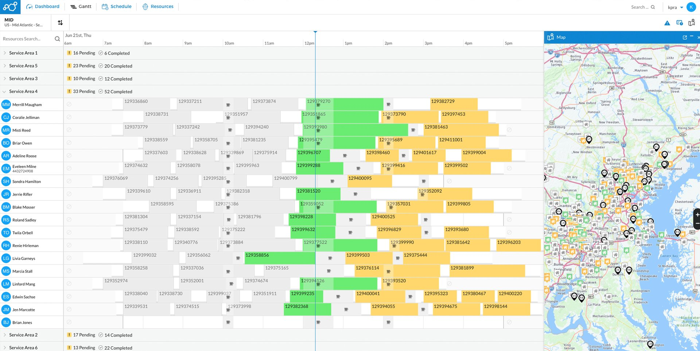
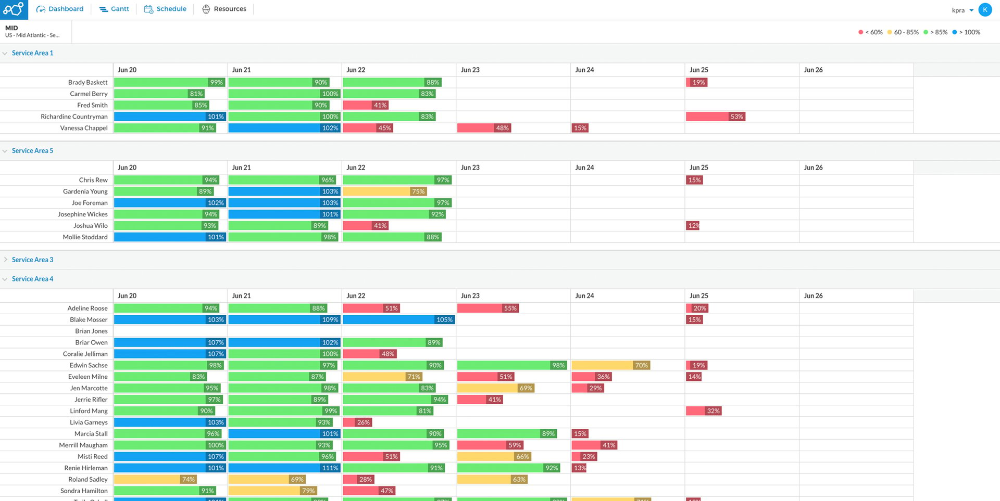
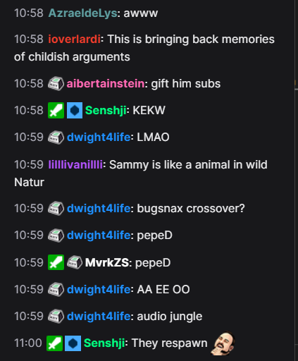
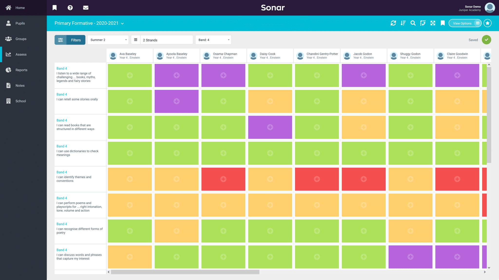
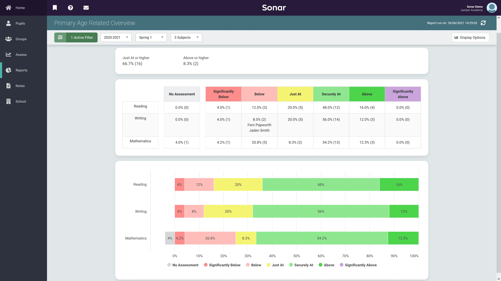
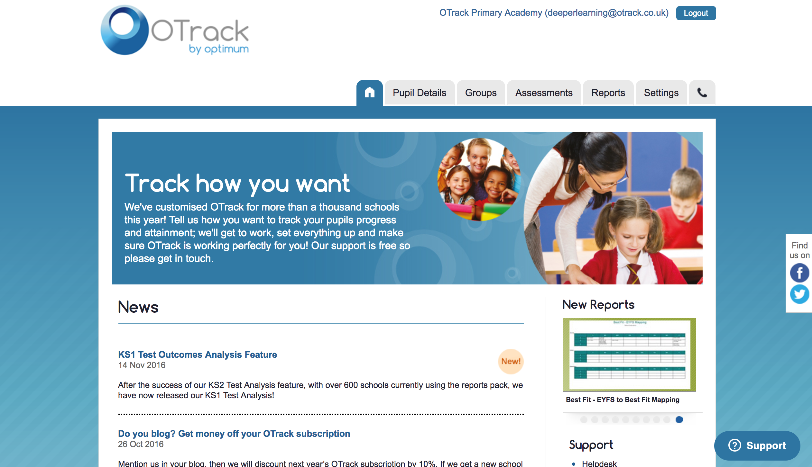
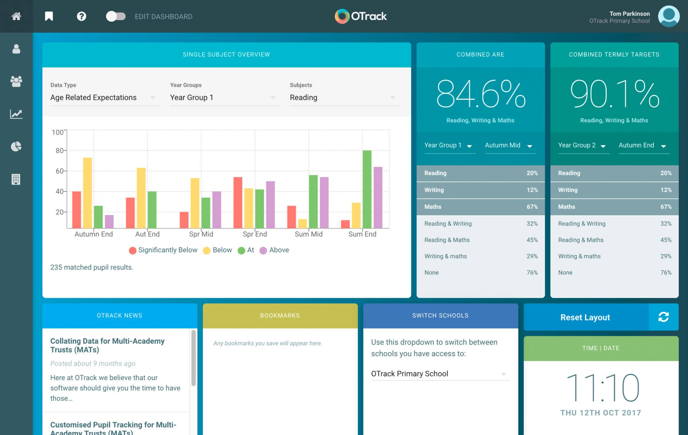

I am a front-end react developer with over 10 years experience in the tech industry and I am passionate about delivering great products to consumers.
I have always had an interest in web development so I have worked on my own projects for many years but I have worked as a front end developer since 2018.
I am also a volunteer mental health mentor for the charity, Mind.
Usual tech stack:
HTML
CSS
Javascript
Typescript
React
Testing Frameworks:
Jest
Cypress
Other:
Pixi JS - WebGL rendering engine
About Me:
Hi, I'm Ryan. Welcome to my little corner of Github! I'm a front-end developer with a passion for building intuitive and beautiful user interfaces using React.
Yet another react dev huh? So what sets me apart? It's my love of writing code that people don't hate working on.
I mean, think about it - readable code is like a love letter to your future self (or another developer who has to work on the same codebase). It's like saying, "Hey, I care about you and your sanity, so I'm going to make sure this code is easy to understand and maintain."
So yes, I take readable code seriously.
I have worked on products that are used by hundreds of thousands of individual users, across more than 30 countries and 4 continents.
I've had the pleasure of building performant, reliable software that is trusted by a wide array of customers, from tiny rural schools to billion dollar businesses.
So if you're looking for a React developer who's passionate, dedicated, and slightly obsessed with code quality, then you've come to the right place. Let's build something amazing together!
Work experience:
Service Power
Sept 2021 to present | Front End Developer
My role here is front end react developer on a product that is being migrated from a native windows
app and rebuilt for the web in React. This is a commercial product used across multiple continents by huge names in the retail and tech space such as John Lewis, Costco,
Home Depot and LG.
"Ryan's calm approach to work made him an awesome person to work alongside. His attention to
detail and creativity consistently exceeded my expectations. His work ethic was second to none and
he really had a passion to show what he was great at"
Ajmal Khan - Development manager


About this project:
As a front-end developer at Service Power, I have taken on a variety of tasks and projects.
One of my first accomplishments was improving the user interface, which involved designing the updated UI using figma and implementing changes into the app
Since then, I have expanded my expertise to encompass all areas of the application, including user management, calendar views, maps, and data analysis
Recently, I had the opportunity to work on Service Power products, which allowed me to step outside of my comfort zone and explore a rendering engine for HTML canvas.
Although this was initially challenging, the end result was extremely rewarding and provided me with invaluable knowledge and increased confidence when approaching new and complex challenges.
Twitch Chat Bot
2020 | Personal Node JS Project
I created a twitch chatbot using Node JS and twitch API's to monitor incoming messages in twitch
streams. It had the ability to block offensive words, block repeat offenders of rule breaches, tell
jokes, greet people when they entered the chat, respond to commands and share information at set
time intervals.

About this project:
This was a project I worked on in my spare
time to give to a friend who streamed video games on Twitch. He was struggling to focus on
streaming while dealing with requests in the stream chat and contending with the abuse and
trolling that can come from that platform.
I saw an opportunity to get some basic understanding of node and improve my coding skills. After a fair few videos and many hours of trial and
error I built an app that could be run locally on his machine every time he streamed.
This bot had its own user account and permissions as an admin on his twitch channel and
would monitor incoming messages for spam/abuse, respond to commands such as "!joke" and return a random
joke from an API that returned a random joke. It would also keep track of whether a person spoke for the first time in chat and greet
them when they did, plus a few other basic features such as time based announcements and reminders to follow on social media platforms.
Juniper Education
Nov 2018 to Sept 2021 | UI/UX and Front End
Developer
I worked on an award winning web app built in React, this product is used by over 10,000 schools
across 25 countries and provides data management, visual dashboards, admin information, sage
integration and data analysis to schools.
“Ryan’s innate attention to detail and desire to solve problems with the highest quality of
work is amazing. This attitude is exactly why he’s delivered so many top-class solutions for me over
the last 7+ years.”
Tom Parkinson – Founder of OTrack
Juniper acquired the previously mentioned OTrack and work began to switch focus onto expanding the app to a new and bigger product called "Sonar Tracker".


About this project:
As a front-end developer at Juniper, my work was to some extent a continuation of the work I had started at OTrack.
The application was built using React, and I was responsible for implementing UI designs created by the lead designer and integrating these features into the product.
My role involved working on all front-end areas of the application, including data dashboards, data entry screens, and user management areas.
I collaborated with other developers and stakeholders to ensure that the app was user-friendly and delivered a seamless experience for end-users.
One of the key strengths of the platform was its ability to integrate with other products across the business, as well as external systems, such as management information systems, via API's.
This allowed for a seamless transfer of data between multiple systems and enhanced the overall functionality of the app.
In addition to my core responsibilities, I also played an active role in troubleshooting and resolving technical issues that arose, working closely with the development team to identify and resolve any bugs or glitches in the app.
Through my work at Juniper, I gained valuable experience in front-end development, data management, and API integration, contributing to the overall success of the platform.
OTrack
Nov 2013 to Nov 2018 | Team Lead and Developer
My initial role here was customer support however I quickly moved to crystal report
development and advanced onto team leader within a period of around 18 months after starting with the business.
I was responsible for the report development team, ensuring work is planned properly, deadlines were met and schools were kept informed with the progress.
As Crystal Reports started to be phased out, I started my learning journey to join the front end dev team in rebuilding the exisiting product in React.
OTrack v1

OTrack v2

About this project:
OTrack was my introduction to the coding world. i did a variety of roles here before ending in the front end developer role. I developed Crystal Reports alongside a small amount of database work, then moved on
to manage the Crystal Reports development team. As this was phased out, I began learning to code to move onto their web product.
By the time I joined the front end dev team, the existing app was starting to show its age so the decision was made to start rebuilding a modern version. I joined the team early in the development of the new version, which was being made in React.
As I joined so early in the project, I was exposed to a lot of the challenges that come with starting to build a product from scratch. Being part of the product development so early on allowed me to very quickly get an understanding
of all the moving parts behind the scenes that made a successful web app. I spent my time learning as much as possible and developed my skills on the fly whilst working on the app.
Building OTrack was a fantastic learning experience for me to start developing my understanding of authentication, databases and communication with API's and getting to see first hand what
it takes to see a product through from a concept to relative completion.
Plusnet
Jan 2012 - Nov 2013 | Tech Support
Network Support for residential and business Plusnet customers.
Dixons
Jan 2012 - Nov 2013 | Technical Expert
First and second line technical support for Dixons customers.